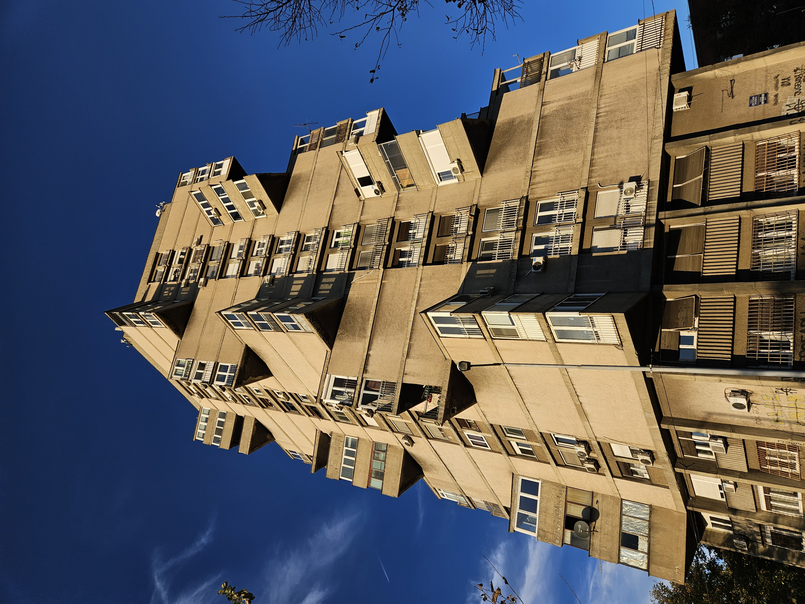
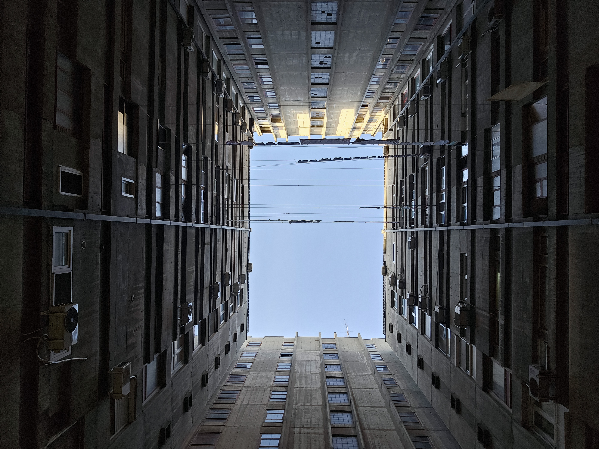
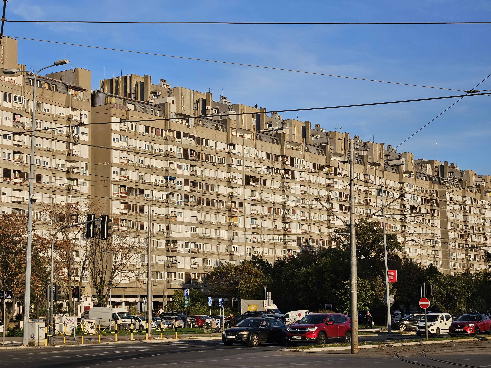
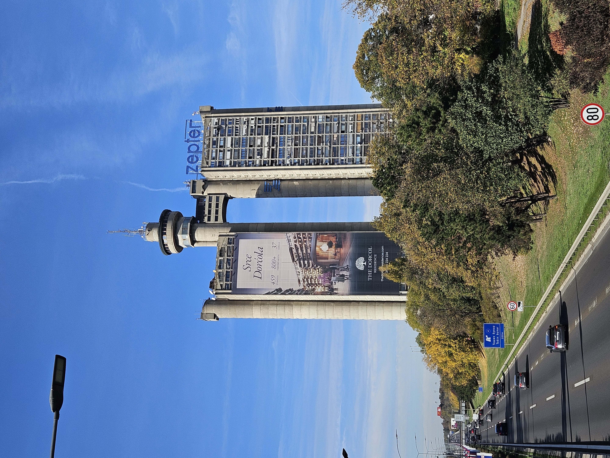
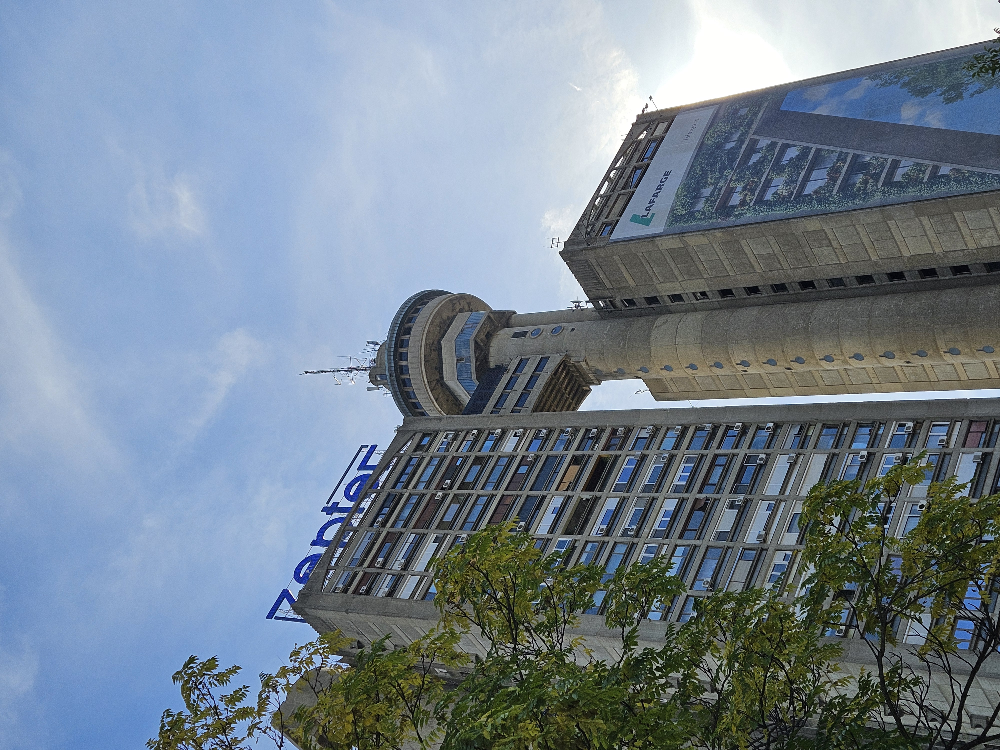
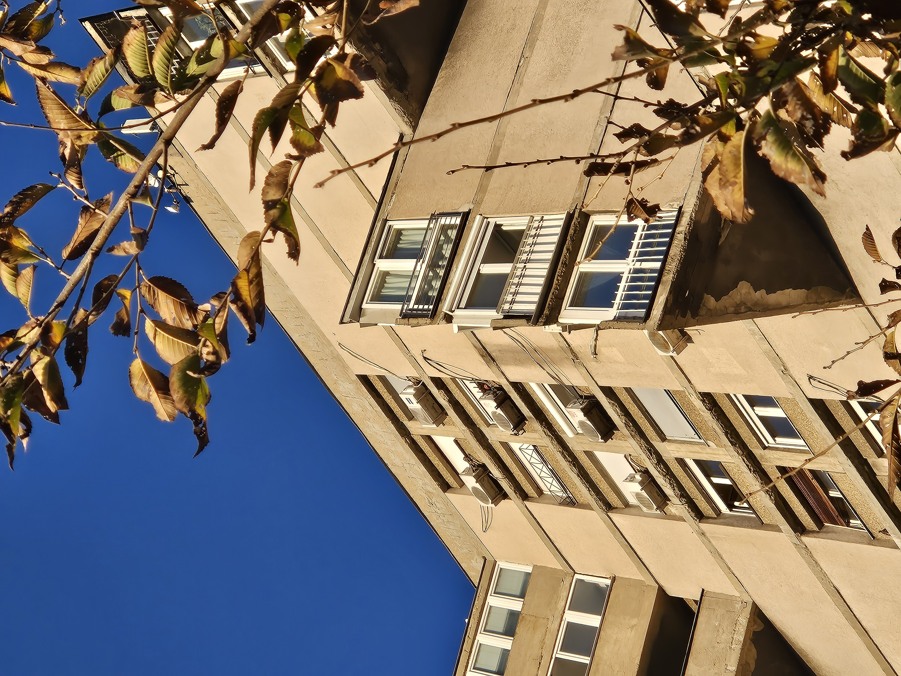
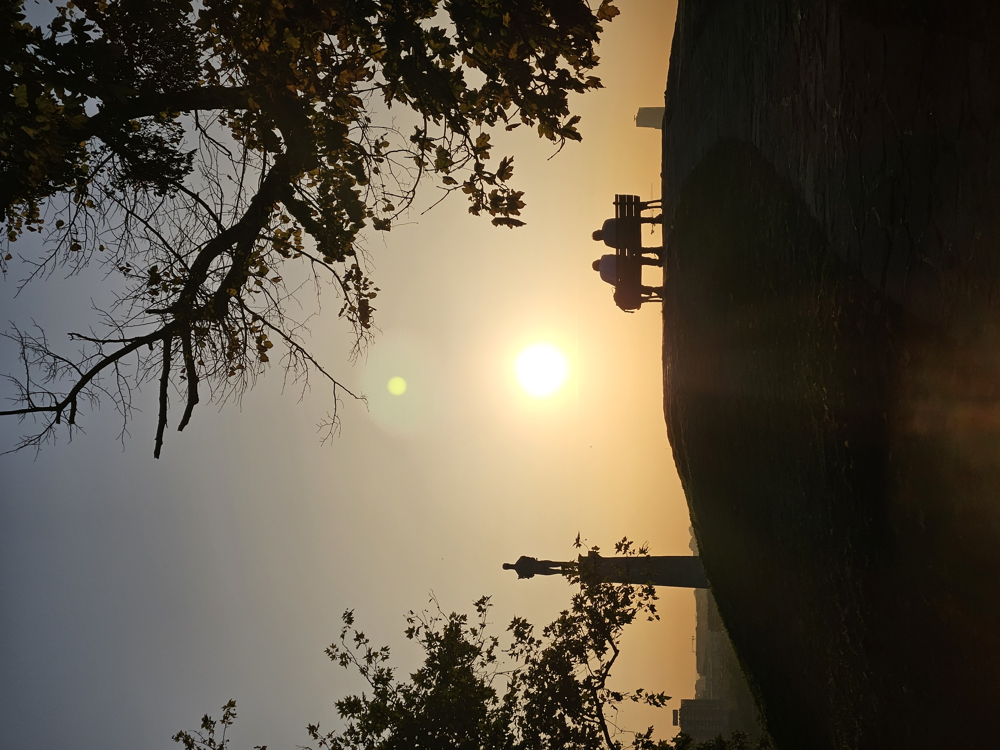
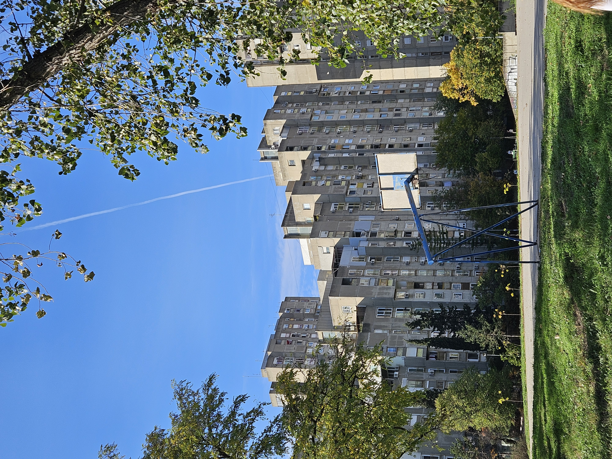

As part of our seminar Adapting Belgrade Towers, we explored the legacy of high-rise buildings in Belgrade, with a focus on the IMS Žeželj system a prefabricated and modular construction method developed in socialist Yugoslavia after World War II to support the rapid construction of housing It became a key part of the development of New Belgrade, an area built on former wetlands along the Danube that later grew into one of the biggest postwar construction projects in Europe. The system allowed for efficient and affordable housing with flexible apartment layouts, making improved living conditions accessible to people from a wide range of social backgrounds.

Before the official excursion started, I spent two days exploring Belgrade on my own. I visited several museums and historical sites. Afterwards, we continued as a group and visited a variety of residential towers. We observed façades, discussed layouts, and looked at how standardized construction systems influenced everyday living.





The Genex Tower especially stood out because of its striking form. It felt like a symbol of a particular moment in architectural history ambitious, monumental, and deeply connected to the social and political context of Belgrade at the time. Sadly, the tower has been neglected in recent years, and its future remains uncertain.


Documenting the architectural legacy of Belgrade.
Through observations and discussions, we gained a better understanding of how architecture reflects changing social needs and how these buildings might be reimagined for the future.